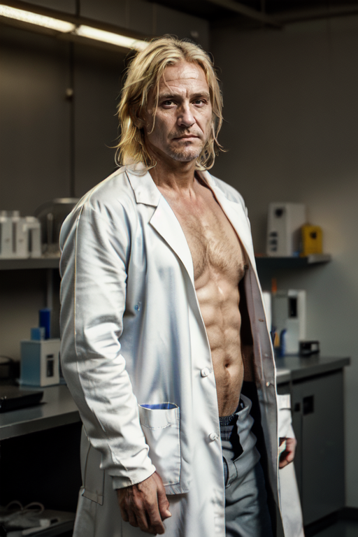
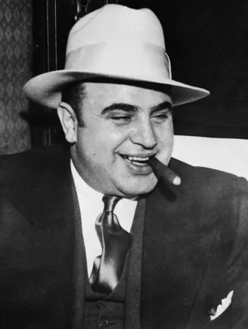
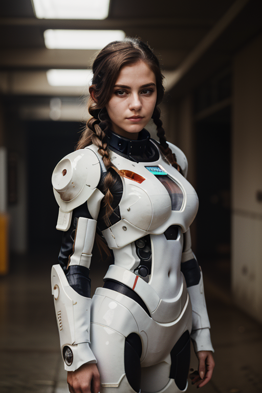
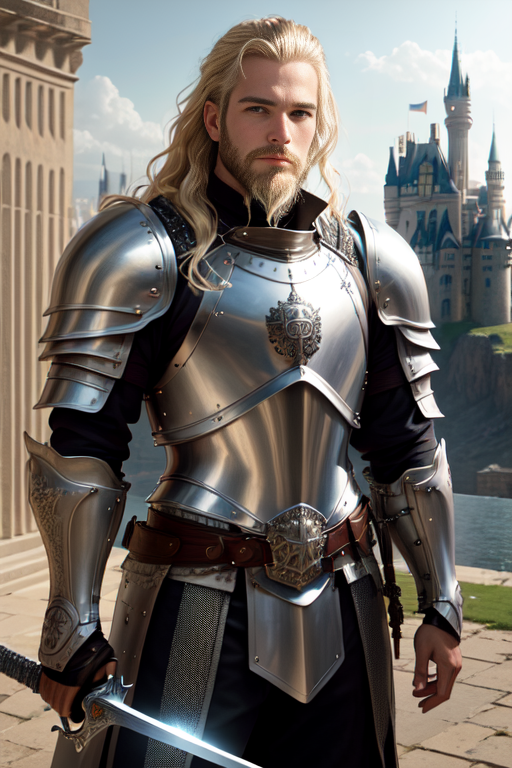
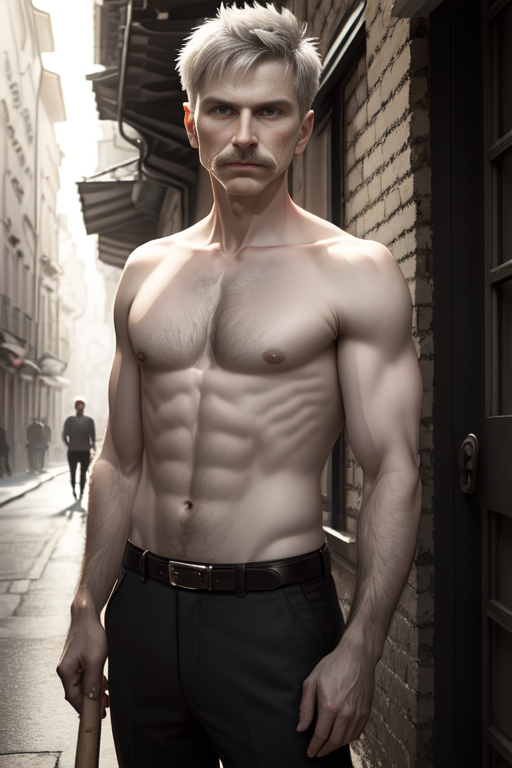
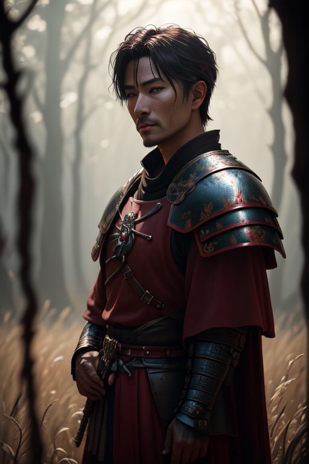
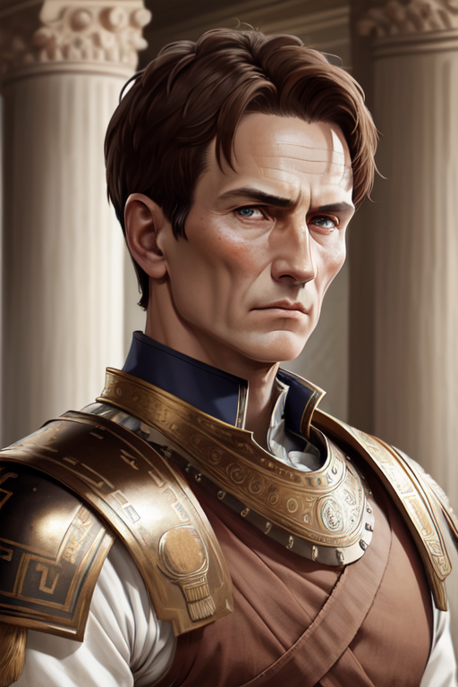
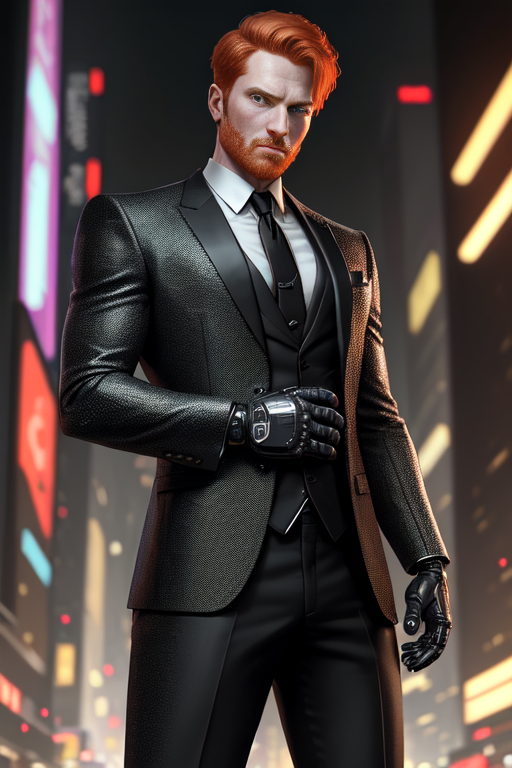
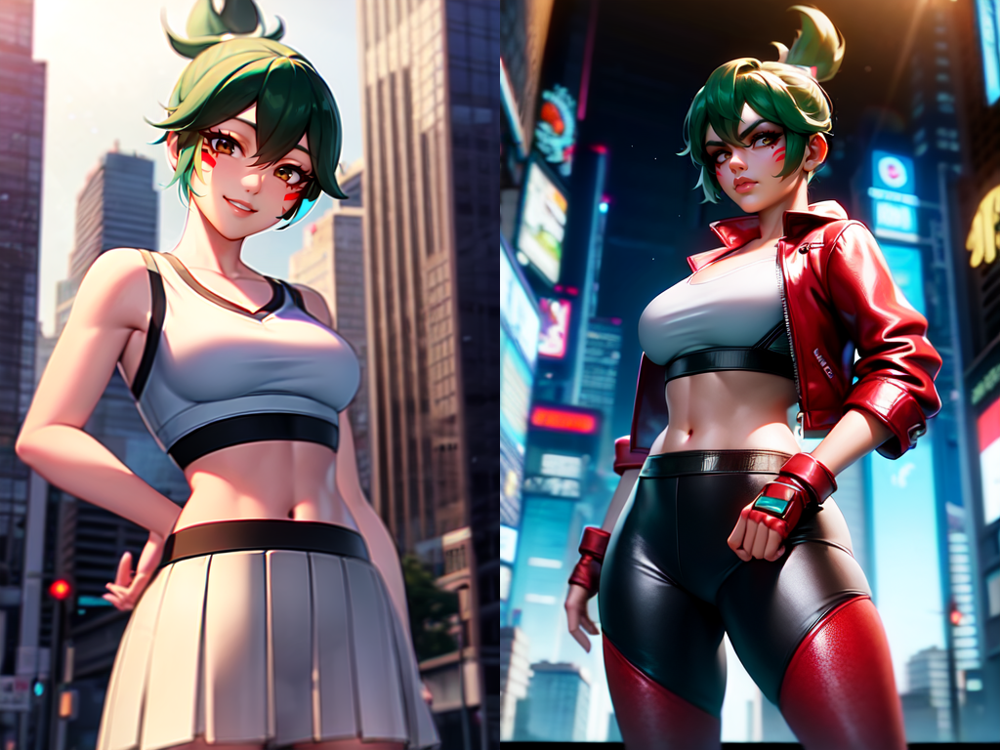

[Characters]
[Main Villians]
Mike Felsing
Mike isn’t really a bad guy, he just messed with time, so times gotta mess with him back. An accomplished scientist, Mike has revolutionized agriculture and transportation while also finding a way to time travel. After the whole meta human incident, Mike knew that outlandish ideas might be true, causing him to develop time travel. His goal at first was to just see the old west, maybe live there a while. But after becoming sheriff in the old west, he realized he had the power to right the wrongs of history. From there he goes on his quest to change bad events in history and see how they would unfold in the present day. After saving caesar, he realized he could do a lot more scientific work if he had more money and was his own boss. Gambling his life away, he made a ton of money at various casinos of the world. Starting his own company called Brah Corp to invent new stuff. Currently creating high value drugs, some prototyping (!!). Create other mechanical innovations too. [STATS] Techie, Age 39 INT [ 10 ] Jury Rig [10] REF [ 7 ] Education [8] TECH [ 10 ] Cybertech[10] COOL [ 8 ] Pharma [8] ATTR [ 5 ] Gamble [5] LUCK [ 2 ] Chemistry[9] MA [ 4 ] BODY [ 7 ] EMP [ 8 ] SAVE [ 7 ] BTM [ -2 ] Rep [ 7 ] [ITEMS/WEAPONS] In possession of 1 super strength pill [degraded (teir 4)] (old Rebirth gear)
Al Capone
Displaced out of the prohibition era, Capone is an excellent fixer, he knows how to coerce anyone to do anything. Upon arriving in Night City, he has gained a mass of bodies to his Mafia where he intends to take over the Night City Underground. His main source of income is the new drugs that Brah Corp is producing. All of his goons should be equipped with tommy guns, as class/style is always above function. [STATS] Fixer, idk age, Make up specific stats in game INT [ 10 ] REF [ 7 ] TECH [ 9 ] COOL [ 10 ] ATTR [ 4 ] LUCK [ 8 ] MA [ 3 ] BODY [ 5 ] EMP [ 10 ] SAVE [ 5 ] BTM [ -2 ] Rep [ -7 ] [ITEMS/WEAPONS] Tommy gun | Range: 200m | DMG: 2D6+2 | CAP: 50 | ROF: 20 | VR
Aether Nova
Infamous Solo of 2179, Aether has more kills than anyone in her time. Equipped with the most latest cyberware and weaponry, Aether is unstoppable at imposing her will in 1866. Once displaced she took out nearly every gang leader and joined them into her own gang. Master of CQC, Aether wields a sword that doubles as a gun. In the wild west, Aether is out of her element, lack of technology and quick transportation, not to mention electricity, has hindered her fighting capability. What made her one of the best was the power armor that made her virtually bulletproof, stolen from [CORP NAME]. Without a way to power the suit, she has taken some pieces off of it to make a makeshift armor she can wear without needing to power the suit. [STATS] Solo, young ish INT [ 5 ] REF [ 10 ] TECH [ 5 ] COOL [ 6 ] ATTR [ 9 ] LUCK [ 3 ] MA [ 9 ] BODY [ 10 ] EMP [ 7 ] SAVE [ 10 ] BTM [ -4 ] Rep [ -8 ] [ITEMS/WEAPONS] "Zweihandler" | Range: 500m | +1 | DMG: 3D10+2 (12.7mm rifle) | CAP: 10 | ROF: 1 | ST -Sword part | Range: 1m | DMG: 4D6 2x Arasaka Minami 10 | CON: J | WA: 0 | DMG: 2D6+3 | CAP: 40 Shots | ROF: 20 | CAL: 10mm | REL: VR | Range: 200m Arasaka LM-6 Blade Runner Power Suit | SP all 40 | essentially super strength teir 4 Punch (in Suit) = 3D10 (out of suit) = 1D6+5 [CYBERWARE] Skin Weave Nanosurgeons - x2 healing rate Basic Neural Processor -Speedware - +3 initiative for 5 turns -Interface Plugs *Smartgun Link -Machine/Tech Link -Vehicle Link -Tactile Boost - +2 touch Awareness Cyber Optic -Image Enhancement - +2 Aware (visual) -Micro-optics CyberArm(L) w/ grapple hand -Big Knucks -Armor -Weapon Link -RealSkinn - diff 20 to notice
Franz Von Sickingen
Knight of the Holy Roman Empire, and advisor to King something, Sickingen was a very well trained knight, capable of besting any foe in a duel. Upon being displaced into 1942, he worked under Himmler as a bodyguard. Sickingen now leads the secret service equivalent to Himmler in 1943, with many others with the same skill set as him, plate mail and all. In order to keep up with the times, the chestpiece of the plate mail is a thicker steel plate to stop most bullet calibers. [STATS] Solo, old INT [ 5 ] REF [ 8/10 ] TECH [ 5 ] COOL [ 6 ] ATTR [ 6 ] LUCK [ 2 ] MA [ 8 ] BODY [ 10 ] EMP [ 5 ] SAVE [ 10 ] BTM [ -4 ] Rep [ 5 ] [ITEMS/WEAPONS] Bastard Sword | DMG: 3D6+2 | VR Modded plate armor | SP all: 15 | SP Torso: 22 | -2 REF
Franz Ferdinand
Extremely buff, this Archduke can easily bench 3 times his weight. In this timeline, he is saved by a man named Max Fritz, albeit never known to the Archduke. Being the leader of the Austro-hungarian empire, he commands a large military force for the time and always has a security detail with him. Players need to be cautious in a close quarters engagement with this man, as he can rip their arms from their body with ease. [STATS] Corp, idk age INT [ 8 ] REF [ 7 ] TECH [ 2 ] COOL [ 8 ] ATTR [ 9 ] LUCK [ 2 ] MA [ 9 ] BODY [ 10 ] EMP [ 9 ] SAVE [ 10 ] = [20] BTM [ -4 ] = [-8] Rep [ 9 ] [ITEMS/WEAPONS] Classic nagant revolver | DMG: 2D6+2 | +2 | VR super strength tier 2 -Punch = 1D6+8, roll+18 to hit
Sanada Yukimura
An accomplished samurai from feudal Japan, this man has nothing to lose but honor in ancient Rome. His sole quest is to return home to Japan, but to do that he needs a convoy to make it across the world and back to his home. Yukimura will stop at nothing to get back, even going out of his way to eliminate the hierarchy of the Roman Government. Players will want to bring him back alive, lest they need to have someone replace him in his time to continue his legacy. [STATS] Solo, young ish INT [ 6 ] REF [ 10 ] TECH [ 2 ] COOL [ 8 ] ATTR [ 5 ] LUCK [ 2 ] MA [ 10 ] BODY [ 10 ] EMP [ 9 ] SAVE [ 10 ] BTM [ -4 ] Rep [ 1 ] [ITEMS/WEAPONS] Expertly crafted katana | 4D6 + 2 | Roll + 20 Samurai Armor | SP all: 14 (+5 against blade)
Julius Caesar
What is there to say, Caesar is the great conqueror and one of the greatest Roman Emperors. Expert tactician and brilliant duelist, Julius is a very hard man to kill. After being warned of the attempt on his life, he now has an elite security detail to prevent any such occurrences. Mike also gave him a gun… Luckily players have an ally in this situation, as Yukimura would gladly help kill Caesar if it lead to his return home. [STATS] Corp, aged INT [ 5 ] REF [ 10 ] TECH [ 2 ] COOL [ 10 ] ATTR [ 4 ] LUCK [ 2 ] MA [ 6 ] BODY [ 10 ] EMP [ 7 ] SAVE [ 10 ] BTM [ -4 ] Rep [ 9 ] [ITEMS/WEAPONS] Bronze Sword | DMG: 4D6+2 | VR Llama Commanche Revolver | DMG: 4D6 | .44 Mag | CAP: 6 | ROF: 1 | ST | Roll + 8 Sturdy Bronze Armor | SP All: 12
[Side Characters]
Ron Elbert
A reasonable fixer in Night City, he commands the “Night Blood” gang and owns various shops around the northside of Night City. He aims high and wants the Mafia out of his territory. The Mafia has shown that with a large amount of capital, anything is possible. Right now the best way to gain capital is drugs and weapons, which the Mafia has a lot of. The Night Bloods are a fierce gang, who love close quarters combat. Primarily carrying shotguns, these goons are light on their feet and quick to get to the enemy. [STATS] Mid Fixer, 35 INT [ 4 ] REF [ 8 ] TECH [ 4 ] COOL [ 10 ] ATTR [ 2 ] LUCK [ 2 ] MA [ 8 ] BODY [ 8 ] EMP [ 7 ] SAVE [ 8 ] BTM [ -3 ] Rep [ -3 ] [ITEMS/WEAPONS] Handgun and shotgun Cyber arm
Kiriko
Kiriko, a renown blade master of Japan, is Cass' girlfriend. Recently she discovered that there are more fish in the sea, so why keep dating 1 person? Kiriko cares for Cass, even though Cass does not treat her with the most respect. She stayed with him because of his irresistible charm, and funny quips. Deep down he was a good person, but always wanted to be fishing rather than hanging out with her. Recently she met a man named Nate Demic, maybe she will take Cass' advice... Kiriko [STATS] Solo, 24, 55 points INT [ 4 ] REF [ 8 ] TECH [ 4 ] COOL [ 10 ] ATTR [ 2 ] LUCK [ 2 ] MA [ 8 ] BODY [ 8 ] EMP [ 7 ] SAVE [ 8 ] BTM [ -3 ] Rep [ -3 ] [ITEMS/WEAPONS] Handgun and shotgun Cyber arm